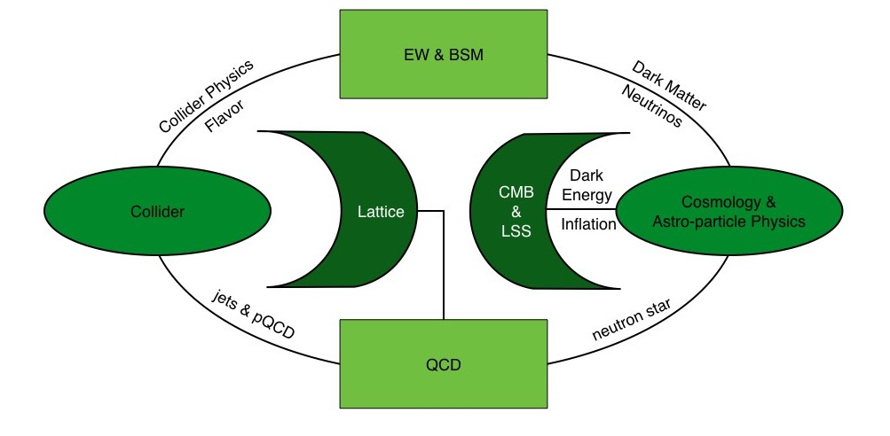

Sutirtha Mukherjee
My ResearchMy research is centered on dark matter phenomenology, Galactic dynamics, cosmology and theoretical physics, with an emphasis on extracting physical information from large astronomical data sets and well-controlled statistical models. Current projects include data-driven reconstructions of the Milky Way rotation curve, joint inference of the local dark matter density, surface-density measurements from stellar kinematics, axion dark-matter searches, and catalogue-level work for large-scale Galactic and cosmological surveys. I work with Gaia DR3, DESI, SDSS, LAMOST and related spectroscopic or astrometric catalogues, combining phase-space reconstruction, Bayesian inference, Jeans modelling, uncertainty propagation and reproducible computational pipelines. The pages below collect active projects, preprint-related figures and research notes. The overview loads only compact previews for speed; full figure galleries with captions appear inside the individual project pages.  Research Topics |
© 2026 Sutirtha Mukherjee